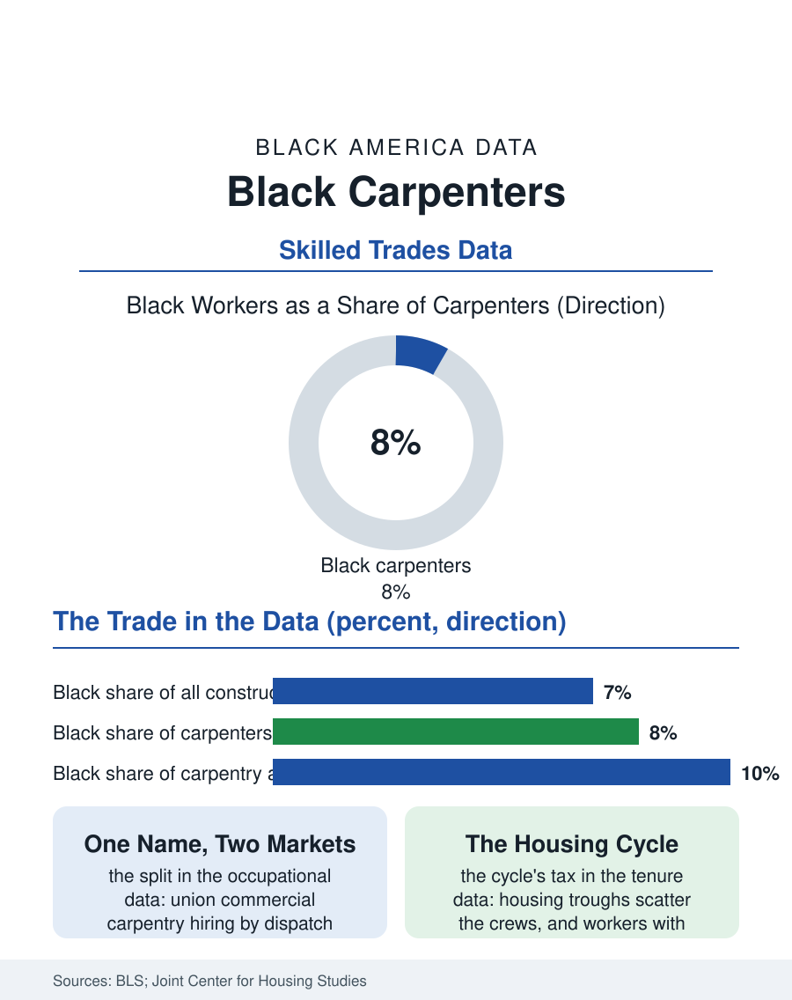

Black Employment
Framing the Country: Black Carpenters
Carpentry is construction's largest trade and one of its most cyclical, and Black carpenters hold under a tenth of its jobs across two very different labor markets. The carpenter file.

Carpenters build the literal frame of the country, and they are its most numerous construction trade, well over a million workers in the federal counts. Black workers hold roughly seven or eight of every hundred carpentry jobs, below their workforce share, in an occupation split between the union halls of commercial construction and the framing crews and finish shops of the housing industry. This article reads the carpenter file.
Two Trades Wearing One Name
The Bureau of Labor Statistics' single occupational line conceals two labor markets. Commercial carpentry, concrete forms, metal studs, institutional interiors, runs through the carpenters' union's apprenticeship system in the northern and coastal metros, with negotiated wages, benefits, and dispatch halls that allocate work by rule. Residential carpentry, framing, roofing support, remodeling, runs through subcontractor crews, piece rates, and the classifieds of the housing economy. Black carpenters are distributed across both, with historic strength in the union locals of the industrial cities, where the carpenters' union, like several building trades, integrated its apprenticeship under federal pressure in the late twentieth century and built a genuine Black journeyman class whose members now sit on the locals' executive boards. The residential side tells the atlas's more familiar story of informal hiring: crews assembled through kinship and neighborhood, in which Black carpenters cluster within Black-led framing and remodeling crews and the independent finish carpenter's one-man shop, doing the high-margin trim and cabinetry work for the custom home market. The self-employment rate in carpentry is among the highest in construction, which softens the employment file's boundaries, since a substantial share of Black carpenters answer, economically, to the business file's rules rather than an employer's.
Housing Cycles and the Body's Ledger
Carpentry employment rides the housing cycle harder than any trade in this section: starts collapse, the framing crews scatter within a quarter, and the rehiring when the cycle turns runs through the same informal networks, freezing out whoever left the network during the trough. The cycle writes a racial pattern into tenure, because the workers with the least wealth cushion, disproportionately Black, are the most likely to exit the trade entirely in a long trough for steadier wages, and re-entry mid-career means restarting at the ladder's lower rungs. The occupational health ledger is the trade's other tax: carpentry carries high rates of musculoskeletal injury, falls, and the cumulative knee, back, and shoulder damage of a working life spent at floor and ceiling height, and the disability data show tradespeople exiting in their fifties with the body spent, into the retirement arithmetic that pensioned union carpenters manage and nonunion carpenters mostly self-fund. Against these costs the trade offers its ancient compensations: visible work, a skill whose competence is undeniable at a glance, and mastery that ages into the finish work where experience outbids youth. The preservation trades add a distinctive Black chapter, the craftspeople restoring the historic Black neighborhoods and churches of this atlas, a niche where cultural knowledge is itself a qualification and where training programs in several cities recruit deliberately from the neighborhoods being restored.
The Framing Shortage Meets the Pipeline
Housing policy has made carpenters a headline occupation: the national housing shortage is, in material terms, a shortage of framed houses, and the industry's workforce analyses project carpenter demand outrunning supply through the decade. The pipeline responses in the record are the trades section's standard set, now with housing money behind them: high school construction academies in the districts where Black students concentrate, pre-apprenticeship programs with direct entry into the union locals, and community college carpentry certificates aligned with the production builders' hiring. The modular and panelized construction frontier, factory-built walls and floors shipped to site, is relocating a share of carpentry indoors, into plants whose workforces hire through factory channels, a shift whose demographic consequences are still unwritten and which the file flags as the occupation's wild card. The carpenter file closes at the job site gate at dawn, where the trade's real hiring system, who is known, who is vouched for, who worked the last subdivision, does its daily sorting. The shortage has made that gate wider than it has been in fifty years. The apprenticeship intakes and academy cohorts of the next five years will record, in the plainest numbers in this atlas, whether the gate stayed wide for Black workers or swung back when the cycle next turned.
More in Black Employment
The Black Unemployment Rate: The Two-to-One Pattern
Black unemployment runs at roughly twice the White rate — 5.5 percent against 3.3 percent in annual averages — a ratio stable across five decades of federal data. How it is measured and why it persists.
Black Median Weekly Earnings: The 80-Cent Ratio
Black full-time workers earn a median of about $900 a week — roughly 80 cents for every dollar White workers earn. The BLS earnings data by group, gender, and occupation.
Black Labor Force Participation: Working at National Rates
Black labor force participation runs at roughly the national rate — and Black women participate at higher rates than White women. The BLS participation data.
Source: U.S. Bureau of Labor Statistics, Current Population Survey and occupational employment data; United Brotherhood of Carpenters apprenticeship data.